PHYSICAL SYNTHESIS – INTRODUCTION (ZERO → HERO)
1️⃣ What is Physical Synthesis? (Classroom Explanation)
Before we understand Physical Synthesis, let us first understand why it was invented.
When a student learns RTL and Logical Synthesis, the output we get is:
Gate-level netlist
Logic is correct
Timing looks “okay” on paper
But silicon does not work on paper.
In real silicon:
- Gates are placed physically
- Wires have length, resistance, capacitance
- Clock does not reach all flops at the same time
- Power, congestion, noise start affecting timing
Logical synthesis assumes ideal wires
Physical world does NOT have ideal wires
This gap created a huge problem in the industry.
So engineers introduced Physical Synthesis
🔹 Definition (Lecture Style)
Physical Synthesis is the process of optimizing the design using physical information (placement, wire length, congestion, and timing) to meet power, performance, and area goals before final place-and-route.
Let’s rewrite it in student-friendly English:
Physical Synthesis is where logic decisions are made by considering the real physical layout of the chip.
2️⃣ Why Physical Synthesis is Needed
Question for Students:
“If logical synthesis already meets timing, why do we need physical synthesis?”
Answer:
Because logical synthesis:
- Does not know where gates will be placed
- Does not know actual wire length
- Uses estimated wire delay
After placement:
- Wires become long
- Timing breaks
- Congestion increases
- Power increases
So industry realized:
“Fixing timing after placement is too late.”
Timing must be optimized with physical awareness
That is Physical Synthesis.
3️⃣ Real-Life Analogy (Very Important)
City Planning Analogy
Imagine:
- Logical Synthesis = Designing rooms on paper
- Physical Design = Building the city
On paper:
- Bedroom to kitchen looks close
In reality:
- Bedroom is on 10th floor
- Kitchen is in another building
You now need:
- Longer stairs
- Elevators
- More power
- More time
If you planned with city map knowledge earlier, design would be better.
Physical Synthesis = Designing with city map in hand
4️⃣ What Exactly Happens in Physical Synthesis?
Step-by-step internal view:
1️⃣ Tool takes gate-level netlist
2️⃣ Tool performs initial placement (coarse)
3️⃣ Estimates:
- Wire delay
- Congestion
- Timing violations
4️⃣ Performs logic changes:
- Buffer insertion
- Gate resizing
- Logic restructuring
5️⃣ Re-analyzes timing using physical estimates
6️⃣ Iterates until timing improves
This happens before final routing
5️⃣ Where Physical Synthesis Fits in the VLSI Flow
Full Flow View (High-Level)
RTL
↓
Logical Synthesis
↓
Physical Synthesis ← YOU ARE HERE
↓
Placement
↓
Clock Tree Synthesis (CTS)
↓
Routing
↓
Signoff
Important:
- Physical Synthesis bridges logic and layout
- Reduces late-stage surprises
6️⃣ Industry Scenario (Real Engineer Life)
You are a physical design engineer.
You get timing report:
WNS = -800 ps
If you wait till routing:
- Too many ECOs
- Schedule slips
- Manager unhappy
But with Physical Synthesis:
- Timing improves early
- Fewer ECOs
- Cleaner layout
- Better power
Industry always prefers early fixes
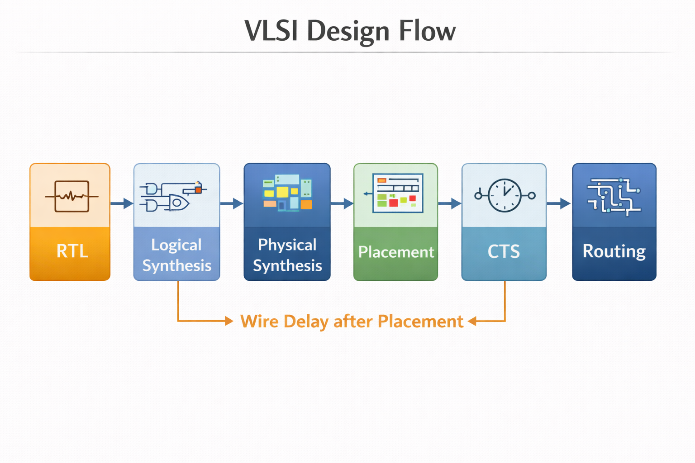
8️⃣ Key Takeaways (Must Remember)
- Physical Synthesis uses physical information to optimize logic
- Solves problems caused by wire delays and congestion
- Reduces timing closure risk
- Acts as a bridge between synthesis and place & route
- Mandatory in modern deep sub-micron designs
9️⃣ Mini Conclusion (Lecture Ending)
Think of Physical Synthesis as:
“Don’t wait for the house to be built to fix the stairs—design them correctly before construction.”
This mindset separates:
- Beginner engineers
- Industry-ready engineers
INTRODUCTION TO PHYSICAL SYNTHESIS
(START HERE – MOST IMPORTANT)
1️⃣ What is Physical Synthesis (Industry Definition)
In real semiconductor companies, physical synthesis is not defined in one line.
Industry-style Definition:
Physical Synthesis is the process of optimizing an RTL or gate-level design using physical information such as placement, wire delay, congestion, and clock distribution to meet timing, power, and area goals before final place-and-route.
Now let us break this into student-friendly meaning:
- Logical synthesis thinks “What logic is needed?”
- Physical synthesis thinks “Where will this logic sit physically on silicon?”
Physical synthesis changes logic decisions based on:
- Estimated placement
- Estimated routing
- Realistic wire delays
Important:
Physical synthesis is not just optimization,
It is optimization with physical awareness.
2️⃣ Why Logical Synthesis Is NOT Enough
This is the core reason physical synthesis exists.
🔹 What Logical Synthesis Assumes
Logical synthesis assumes:
- Zero wire length
- No congestion
- Perfect clock arrival
- Ideal environment
Example:
Flop → Gate → Gate → Flop
Logical synthesis says:
“Timing is clean ✔”
🔹 What Happens in Real Silicon
In real silicon:
- Gates are far apart
- Wires are long
- Clock skew exists
- Routing adds delay
Suddenly:
WNS = -700ps
Logical synthesis cannot see this problem.
3️⃣ What Problems Physical Synthesis Solves
Physical synthesis was created to solve real silicon problems, not theory problems.
Problems Without Physical Synthesis
Problem | Why it Happens |
Timing failure | Long wires after placement |
Congestion | Too many cells in one region |
Excessive buffering | Fixes applied too late |
High power | Over-buffering |
Late ECOs | Fixing problems at routing stage |
Problems Solved by Physical Synthesis
Physical synthesis solves:
✔ Timing degradation due to wire delay
✔ Congestion hotspots
✔ Excessive buffering
✔ Late-stage ECO explosion
✔ Power inefficiency
It fixes problems before they become disasters
4️⃣ Logical vs Physical Synthesis (Real Silicon View)
🔹 Logical Synthesis (LS)
- Works on RTL
- Uses wireload models
- No idea where gates will be placed
- Timing is estimated
🔹 Physical Synthesis (PS)
- Uses placement-aware estimation
- Considers real distances
- Knows congestion regions
- Timing is closer to silicon reality
Comparison Table (Student Friendly)
Feature | Logical Synthesis | Physical Synthesis |
Wire delay | Estimated | Placement-based |
Congestion | Ignored | Considered |
Clock skew | Assumed ideal | Modeled |
Timing accuracy | Medium | High |
ECO count | High | Low |
Silicon success | Risky | Safer |
5️⃣ Evolution of Synthesis (Why PS Was Introduced)
🔹 Old Technology Nodes (180nm – 90nm)
- Wires were short
- Gate delay dominated
- Logical synthesis was enough
🔹 Advanced Nodes (28nm → 3nm)
- Wire delay > gate delay
- Congestion dominates timing
- Clock skew is critical
- Power is extremely sensitive
Logical synthesis started failing consistently
Industry Response
Industry introduced:
- Placement-aware synthesis
- Physical estimation early
- Physical synthesis engines
Thus:
Physical Synthesis was born out of necessity, not luxury
6️⃣ Tools That Support Physical Synthesis
1. Synopsys Design Compiler Topographical (DC-T)
- Logical + physical awareness
- Uses floorplan
- Placement-driven optimization
- Bridge between DC and P&R
Used when:
- Early physical estimation is needed
2. Synopsys Fusion Compiler
- Full RTL → GDS flow
- Unified synthesis + place + route
- Strong physical synthesis engine
- Industry-standard for advanced nodes
Used when:
- Tight timing
- Advanced technology nodes
- Large SoCs
3. Cadence Genus (Physical Mode)
- Logical synthesis + physical guidance
- Works with Innovus
- Physical-aware optimization
Used when:
7️⃣ Role of a Physical Synthesis Engineer
This is very important for students.
Physical Synthesis Engineer Responsibilities
- Analyze timing failures early
- Optimize logic with physical context
- Reduce congestion hotspots
- Control buffering
- Prepare clean netlist for P&R
- Reduce ECO count later
Not Just Running Commands
A physical synthesis engineer must:
- Understand timing deeply
- Understand placement impact
- Know when to restructure logic
- Balance power, performance, and area
This role requires thinking, not just scripting.
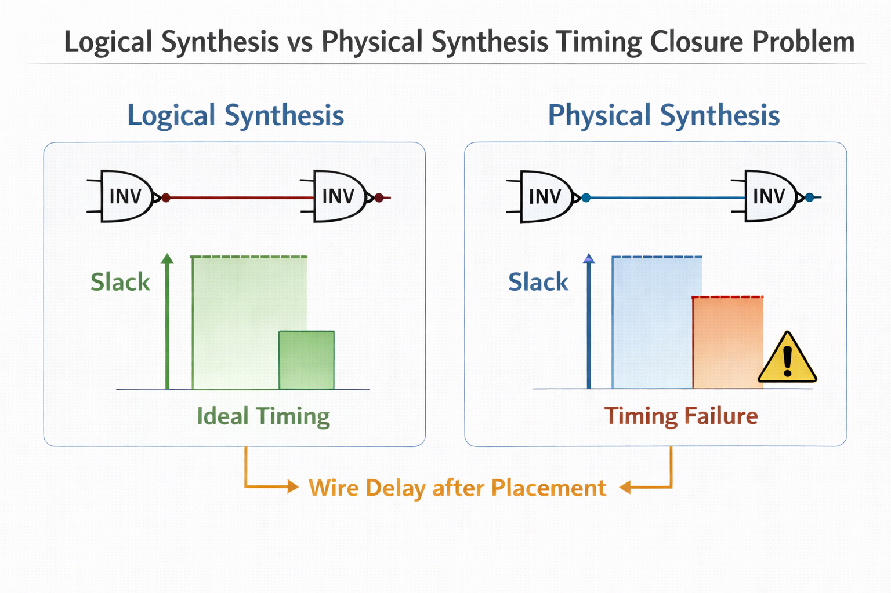
9️⃣ Key Takeaways (Exam + Industry)
- Logical synthesis alone is not enough
- Physical synthesis considers real silicon effects
- It improves timing closure success
- Reduces late-stage ECOs
- Mandatory for advanced technology nodes
Module 1 Conclusion (Lecture Style)
Physical synthesis teaches one core lesson:
“Silicon does not care about theory — it cares about physics.”
If you understand this,
you are no longer a beginner.
INPUTS REQUIRED FOR PHYSICAL SYNTHESIS
(What the tool needs to START Physical Synthesis)
0️⃣ Why Inputs Matter in Physical Synthesis
Before we discuss each input, understand one golden rule:
Physical synthesis cannot “guess” silicon reality — it needs correct inputs.
If any input is:
Then:
- Timing closure will fail
- Power numbers will be wrong
- P&R will suffer later
So inputs are the foundation of physical synthesis.
1️⃣ Gate-Level Netlist
🔹 What Is a Gate-Level Netlist?
A gate-level netlist is:
- A structural description of your design
- Contains standard cells (AND, OR, DFF, MUX, etc.)
- Created by logical synthesis
Example (conceptual):
U1 AND2_X1
U2 DFF_X1
U3 INV_X2
🔹 Why Physical Synthesis Needs It
Physical synthesis:
- Does NOT work on RTL directly (mostly)
- Needs exact gates that will be placed
- Optimizes gate structure + placement impact
It answers:
“Given these gates, how do I place and optimize them physically?”
🔹 Real-Life Analogy
RTL = architectural drawing
Gate netlist = actual bricks and beams
Physical synthesis is about arranging bricks, not drawing plans.
2️⃣ Technology Libraries (Very Critical)
Technology libraries tell the tool:
“What kind of silicon world am I building this design in?”
There are two main types used in physical synthesis:
3️⃣ .lib – Timing & Power Library
🔹 What is a .lib File?
.lib (Liberty file) contains:
- Timing models
- Power models
- Functional behavior
- Process corners (slow, fast, typical)
🔹 What Information It Contains
Timing Information
- Cell delay
- Setup time
- Hold time
- Clock-to-Q
- Transition delays
Power Information
- Internal power
- Switching power
- Leakage power
Logical Info
- Boolean function
- Pin direction
- Timing arcs
🔹 Why Physical Synthesis Needs .lib
Physical synthesis uses .lib to:
- Calculate realistic timing
- Choose faster or smaller cells
- Balance power vs performance
Example:
- Replace AND2_X1 → AND2_X4 to fix timing
Without .lib, no timing analysis is possible.
4️⃣ .lef – Physical Library Information
🔹 What is a .lef File?
LEF = Library Exchange Format
It contains physical data, not timing.
🔹 What Information LEF Contains
- Cell width & height
- Pin locations
- Metal layers
- Routing tracks
- Blockages
🔹 Why Physical Synthesis Needs LEF
Physical synthesis needs LEF to:
- Estimate placement
- Estimate wire length
- Detect congestion
- Understand routing feasibility
Timing depends on distance, not just logic.
🔹 Important Note (Very Industry-Relevant)
- .lib tells how fast a cell is
- .lef tells how big a cell is
Physical synthesis needs both.
5️⃣ Physical Constraints
Physical synthesis is constraint-driven, not automatic magic.
🔹 What Are Physical Constraints?
They define:
- Where things are allowed
- Where things are forbidden
🔹 Types of Physical Constraints
✔ Core area
✔ Keep-out regions
✔ Placement restrictions
✔ Macro boundaries
These guide:
- Placement engine
- Congestion control
- Timing-aware spreading
6️⃣ Floorplan Information
🔹 What Is a Floorplan?
A floorplan defines:
- Chip boundary
- Core area
- Macro locations
- IO positions
🔹 Why Physical Synthesis Needs Floorplan
Physical synthesis uses floorplan to:
- Understand distance between blocks
- Predict routing paths
- Perform placement-aware optimization
Example:
- Two flops far apart → timing issue predicted early
No floorplan = blind optimization
7️⃣ Placement Blockages
🔹 What Are Placement Blockages?
Blockages are regions where:
- Cells are not allowed
- Routing is restricted
🔹 Why They Matter in Physical Synthesis
Blockages cause:
- Congestion
- Detours in routing
- Unexpected timing degradation
Physical synthesis:
- Tries to avoid hotspots
- Rebalances logic early
8️⃣ Timing Constraints (.sdc)
🔹 What is .sdc?
SDC = Synopsys Design Constraints
It defines:
- Clock definitions
- Input delays
- Output delays
- False paths
- Multicycle paths
🔹 Why Physical Synthesis Needs SDC
Physical synthesis optimizes:
- Only what is constrained
- Only what matters for timing
No SDC → Tool does NOT know:
- What is critical
- What can be relaxed
Bad SDC = bad silicon.
9️⃣ Power Intent (UPF / CPF – Intro Level)
🔹 What Is Power Intent?
Power intent describes:
- Power domains
- Power switches
- Isolation cells
- Retention registers
🔹 Why Physical Synthesis Needs It
Physical synthesis must:
- Place power cells correctly
- Preserve isolation logic
- Avoid illegal optimization
Without power intent:
- Logic may break during low-power modes
🔹 Intro-Level Note (Student View)
You don’t master UPF now, but:
You must know why it exists.
🔟 Parasitic Information (Early Estimation)
🔹 What Are Parasitics?
Parasitics include:
- Wire resistance (R)
- Wire capacitance (C)
🔹 Why Physical Synthesis Needs Early Parasitics
Even before routing:
- Tool estimates RC values
- Predicts timing more accurately
- Reduces surprises later
This is called:
Early or Estimated Parasitics
1️⃣1️⃣ How All Inputs Work Together (Big Picture)
Think of physical synthesis like cooking:
Ingredient | Role |
Netlist | What to cook |
.lib | How fast it cooks |
.lef | How big the pan is |
SDC | Cooking time |
Floorplan | Kitchen layout |
Blockages | No-cook zones |
Power intent | Gas / electricity rules |
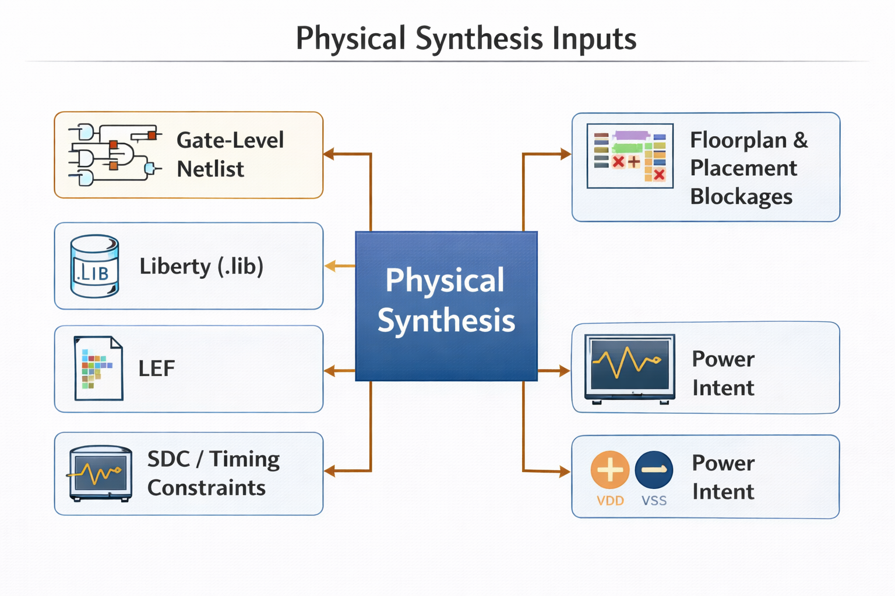
Module 2 Conclusion (Lecture Style)
Physical synthesis does not start with commands.
It starts with correct inputs.
Wrong inputs → Wrong silicon
A good engineer:
- Questions inputs
- Validates inputs
- Understands why each input exists
PHYSICAL AWARENESS CONCEPTS
(VERY IMPORTANT – Students usually miss this)
0️⃣ Why This Module Is CRITICAL
Most beginners think:
“Timing is only about logic gates.”
That thinking is 100% wrong in modern VLSI.
Physical awareness is the reason:
- Logical synthesis timing looks good
- Post-route timing fails
If students don’t understand this module:
- They will never close timing
- They will blame tools instead of physics
1️⃣ What is Physical Awareness?
🔹 Simple Definition (Industry Style)
Physical awareness means:
The synthesis tool understands real silicon effects like wire length, placement distance, congestion, and routing delay — not just logic equations.
In other words:
- Tool does NOT assume gates are next to each other
- Tool predicts where gates will be placed
- Tool estimates how long wires will be
🔹 Logical vs Physical Thinking
Logical Thinking | Physical Thinking |
Zero wire delay | Real wire delay |
Ideal placement | Congested placement |
Gates are free | Gates occupy area |
Physical synthesis = logic + physics
2️⃣ Cell Delay vs Wire Delay
🔹 What is Cell Delay?
Cell delay is:
- Delay inside a standard cell
- Given by .lib
- Depends on:
Example:
- INV delay = 10 ps
- AND delay = 25 ps
🔹 What is Wire Delay?
Wire delay is:
- Delay due to metal interconnect
- Depends on:
- Wire length
- Metal layer
- Resistance (R)
- Capacitance (C)
🔹 Reality Check (Very Important)
In advanced nodes (28nm, 14nm, 7nm):
Wire delay > Cell delay
That means:
- Making gates faster doesn’t always fix timing
- Shortening wires often helps more
3️⃣ Why Interconnect Dominates Timing
🔹 Old vs New Technology
Old technologies (180nm):
- Short wires
- Large gates
- Cell delay dominated
Modern technologies (28nm and below):
- Long global wires
- Thin metal
- High resistance
Result:
Interconnect delay dominates timing
🔹 Real Example
Path delay breakdown:
- Logic delay: 35%
- Wire delay: 65%
So optimizing only logic is not enough.
4️⃣ RC Delay Basics (Must Know)
🔹 What is RC Delay?
Wire delay is modeled as:
Delay ≈ R × C
Where:
- R = resistance of wire
- C = capacitance of wire
🔹 Why RC Increases
- Longer wire → more R
- Wider coupling → more C
- Congested routing → detours → more length
🔹 Key Student Insight
Every extra micron of wire adds delay
That’s why:
- Placement matters
- Floorplan matters
- Congestion matters
5️⃣ Congestion Awareness
🔹 What is Congestion?
Congestion happens when:
- Too many wires want to pass through same region
- Routing resources become limited
🔹 Why Congestion is Dangerous
Congestion causes:
- Longer routing paths
- Higher RC delay
- DRC violations
- Timing degradation
🔹 Physical Synthesis Role
Physical synthesis:
- Predicts congestion early
- Spreads logic
- Avoids hot spots
- Re-structures logic to reduce wiring
Logical synthesis cannot do this.
6️⃣ Placement-Driven Optimization
🔹 What Does This Mean?
Instead of:
- Optimize logic first
- Place later
Physical synthesis does:
- Place first (roughly)
- Optimize based on placement
🔹 Example
If two flops are far apart:
- Tool may insert buffer
- Tool may restructure logic
- Tool may move logic closer
This is placement-driven optimization.
7️⃣ Early Routing Estimation
🔹 What is Early Routing?
Before real routing:
- Tool estimates wire paths
- Calculates approximate RC
- Predicts timing more accurately
🔹 Why This Is Powerful
Early routing allows:
- Early timing fixes
- Fewer surprises in P&R
- Faster convergence
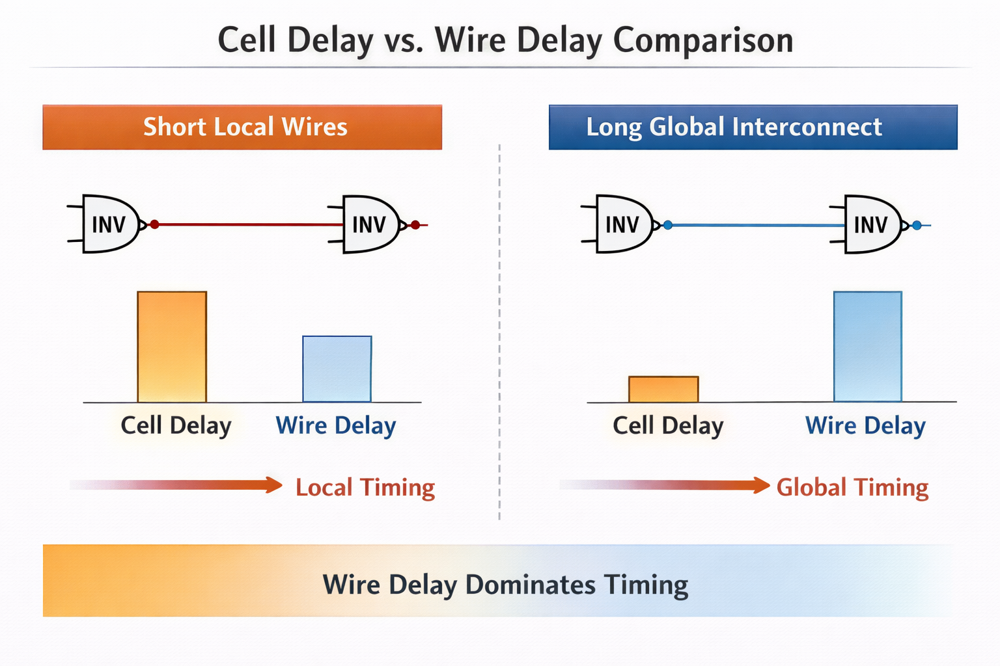
Module 3 Conclusion
Physical awareness teaches one truth:
Timing is not just about gates — it is about distance.
A good physical synthesis engineer:
- Thinks in microns
- Thinks in RC
- Thinks in congestion
📘 MODULE 4
FLOORPLAN AWARENESS IN PHYSICAL SYNTHESIS
(Bridge Between Synthesis and P&R)
0️⃣ Why Floorplan Awareness Exists
Students often ask:
“Why does synthesis care about floorplan? Isn’t that P&R’s job?”
Answer:
Because timing is physical.
Without floorplan:
- Tool guesses distances
- Timing predictions are wrong
1️⃣ What is a Floorplan?
🔹 Simple Definition
A floorplan defines:
- Chip boundary
- Core region
- Macro locations
- IO locations
- Routing regions
It is the physical blueprint of the chip.
2️⃣ Die Area vs Core Area
🔹 Die Area
- Total chip size
- Includes IO ring and seal ring
🔹 Core Area
- Region where standard cells are placed
- Excludes IOs and pads
Physical synthesis optimizes inside the core.
3️⃣ Aspect Ratio
🔹 What is Aspect Ratio?
Aspect ratio =
Width : Height of the core
Common values:
🔹 Why Aspect Ratio Matters
Bad aspect ratio causes:
- Congestion
- Long wires
- Poor timing
Physical synthesis must adapt logic based on shape.
4️⃣ Utilization
🔹 What is Utilization?
Utilization =
(Standard cell area / Core area)
Example:
- 70% utilization → good
- 85% utilization → risky
- 95% utilization → nightmare
🔹 Why PS Cares
High utilization:
- Less routing space
- More congestion
- Timing failures
Physical synthesis may:
- Spread logic
- Resize cells
- Reduce density
5️⃣ IO Placement (Overview Level)
IOs define:
- Entry and exit points of signals
- Distance to internal logic
Poor IO placement:
- Long wires
- Input/output timing issues
Physical synthesis must know IO locations for:
- Accurate timing estimation
6️⃣ Macro Awareness (SRAM, IP Blocks)
🔹 What Are Macros?
Macros are:
- Large blocks (SRAM, PLL, IP)
- Fixed size
- Limited placement flexibility
🔹 Why Macros Matter
Macros:
- Block routing
- Create congestion
- Force detours
Physical synthesis:
- Places logic around macros
- Avoids critical paths crossing macros
7️⃣ Why Physical Synthesis MUST Know Floorplan
Without floorplan:
- Wire delay is guessed
- Congestion is ignored
- Timing closure fails late
With floorplan:
- Realistic timing
- Better optimization
- Faster P&R convergence
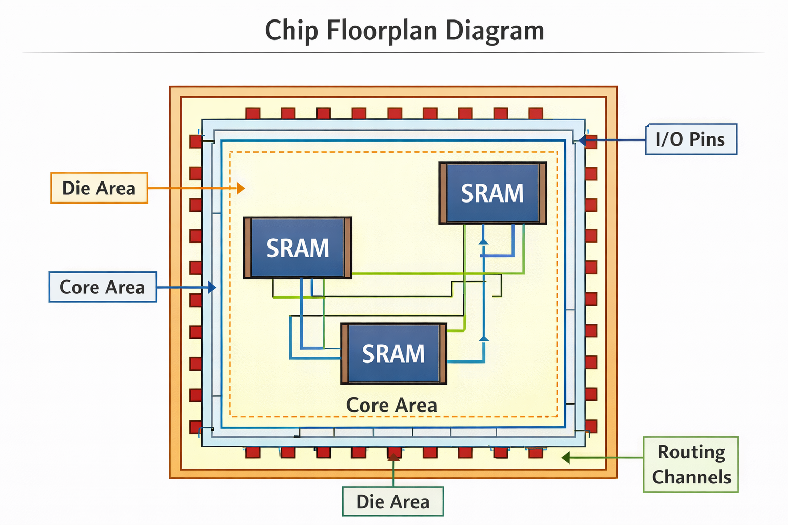
Module 4 Conclusion
Floorplan awareness turns synthesis into silicon-aware engineering.
Good floorplan → good timing → good chip
PHYSICAL SYNTHESIS FLOW (STEP-BY-STEP)
(CORE MODULE – MOST IMPORTANT)
0️⃣ Why This Module Matters
If someone asks in an interview:
“Explain physical synthesis flow”
This module is the answer.
If a student understands this:
- They understand what the tool is actually doing
- They stop treating synthesis like a black box
1️⃣ Translation (Netlist + Physical Data)
🔹 What is Translation in Physical Synthesis?
Translation is the first step where the tool builds an internal physical model of the design.
The tool takes:
- Gate-level netlist
- Timing libraries (.lib)
- Physical libraries (.lef)
- Constraints (.sdc)
- Floorplan info
And converts everything into:
A physically-aware internal database
🔹 What Happens Internally?
- Logical connections are mapped to physical cells
- Cells get:
- Nets are associated with:
Without this step, placement is impossible.
2️⃣ Initial Placement Estimation
🔹 Important Point (Students Miss This)
This is NOT final placement.
It is:
- Rough placement
- Timing-driven
- Congestion-aware
🔹 What the Tool Does
- Spreads standard cells in core
- Keeps connected logic close
- Respects macros and blockages
- Estimates wire lengths
This placement is good enough to:
- Estimate RC
- Analyze timing realistically
3️⃣ Timing Analysis with Estimated RC
🔹 Why RC Estimation Is Needed
Logical synthesis assumes:
Physical synthesis assumes:
🔹 What Happens Here
- Wire resistance
- Wire capacitance
- Uses early routing models
- Runs static timing analysis (STA)
Now timing is close to real silicon.
4️⃣ Optimization Loop (Heart of PS)
This is where physical synthesis earns its name.
The tool enters an iterative loop:
Analyze → Fix → Re-analyze → Repeat
5️⃣ Re-Placement
🔹 Why Re-Placement is Needed
After optimization:
- Cell sizes change
- Buffers are added
- Logic structure changes
So placement must be updated.
🔹 Tool Actions
- Moves cells
- Reduces wire length
- Improves congestion
- Rebalances density
6️⃣ Buffer Insertion
🔹 Why Buffers Are Inserted
Long wires cause:
- Large RC delay
- Slew degradation
Buffers:
- Break long nets
- Improve transition
- Fix setup/hold
7️⃣ Gate Sizing
🔹 What is Gate Sizing?
Changing:
- Small cell → bigger drive cell
Example:
🔹 Trade-off
- Bigger cell → faster
- Bigger cell → more power + area
Tool decides based on timing criticality.
8️⃣ Logic Restructuring
🔹 What is Logic Restructuring?
Changing logic structure without changing functionality.
Examples:
- Re-balancing logic levels
- Re-factoring expressions
- Re-ordering logic cones
9️⃣ Timing Convergence
🔹 What is Timing Convergence?
Timing convergence means:
- Setup violations = 0 (or acceptable)
- Hold violations = 0
- WNS/TNS within limits
🔹 When Flow Stops
Flow stops when:
- Timing is met
- Power is acceptable
- Area is reasonable
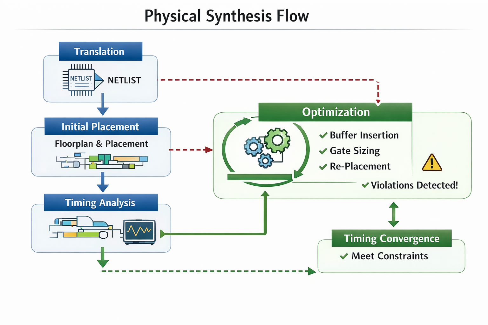
Module 5 Conclusion
Physical synthesis is:
Placement-aware, timing-driven optimization in a loop
📘 MODULE 6
OPTIMIZATION TECHNIQUES IN PHYSICAL SYNTHESIS
(HOW TIMING IS FIXED)
0️⃣ Big Picture
Timing is NOT fixed using one technique.
Physical synthesis uses:
Multiple optimization knobs together
1️⃣ Gate Sizing
Already discussed, but key points:
- Used for critical paths
- Improves setup timing
- Increases power
Used carefully, not everywhere.
2️⃣ Buffer Insertion
🔹 Types
- Repeater insertion
- Load isolation
- Slew fixing
3️⃣ Buffer Relocation
Sometimes:
- Buffer exists
- But placed badly
Tool:
- Moves buffer closer to load
- Reduces wire delay
4️⃣ Path Restructuring
🔹 What It Fixes
- Deep logic levels
- Unbalanced paths
Tool:
- Redistributes logic
- Improves path slack
5️⃣ Cell Swapping
🔹 What is Cell Swapping?
Replacing one cell with:
- Functionally same
- Different physical/timing characteristics
Example:
6️⃣ Delay vs Power Trade-offs
Critical paths:
- Use fast, power-hungry cells
Non-critical paths:
- Use slow, low-power cells
This is smart optimization.
7️⃣ Area Recovery
After timing is fixed:
- Tool downsizes non-critical cells
- Removes unnecessary buffers
Goal:
Reduce area & power without breaking timing
8️⃣ Physical Path Optimization
Tool considers:
- Exact placement
- Net topology
- Neighbor congestion
Optimizes physical path, not logical path.
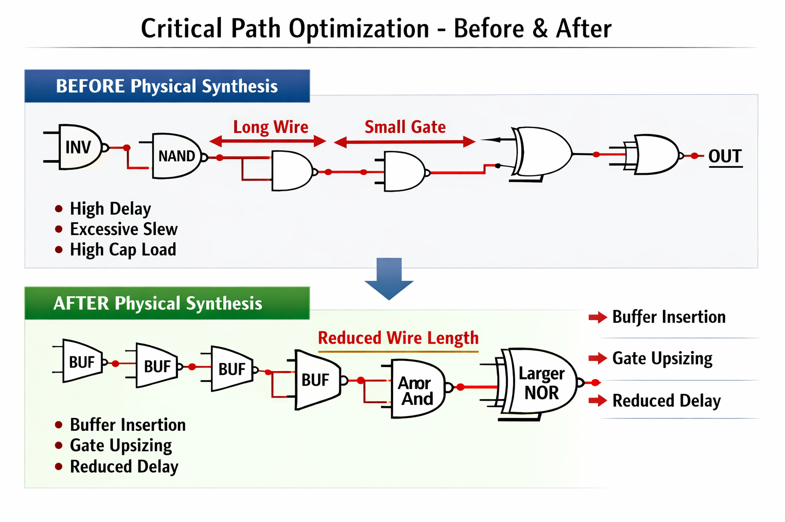
Module 6 Conclusion
Optimization is:
Balancing timing, power, and area using physical reality
📘 MODULE 7
TIMING CLOSURE IN PHYSICAL SYNTHESIS
(INDUSTRY CRITICAL)
0️⃣ What is Timing Closure?
Timing closure means:
- Design meets timing
- Across all conditions
- With no violations
1️⃣ Setup Timing Issues
🔹 Setup Violation
Occurs when:
- Data arrives late
- Before clock edge
Causes:
- Long logic
- Long wires
- Slow cells
2️⃣ Hold Timing Issues
🔹 Hold Violation
Occurs when:
- Data arrives too early
- After clock edge
Causes:
- Short paths
- Aggressive optimization
3️⃣ Why Timing Changes After Placement
Because:
- Wire delays appear
- Congestion affects routing
- Placement alters distances
That’s why logical timing ≠ physical timing.
4️⃣ Path-Based Optimization
Instead of fixing individual gates:
This avoids:
- Over-fixing
- Creating new violations
5️⃣ WNS, TNS, FEP
🔹 WNS (Worst Negative Slack)
Worst single timing violation.
🔹 TNS (Total Negative Slack)
Sum of all violations.
🔹 FEP (Failing Endpoints)
Number of endpoints failing timing.
Industry goal:
6️⃣ Timing Corners
Timing depends on:
- Voltage
- Temperature
- Process
Examples:
- SS, FF, TT
- High temp, low temp
7️⃣ MCMM (Multi-Corner Multi-Mode – Intro)
Modern chips:
- Multiple modes (functional, test)
- Multiple corners
Physical synthesis must:
- Close timing across all corners & modes
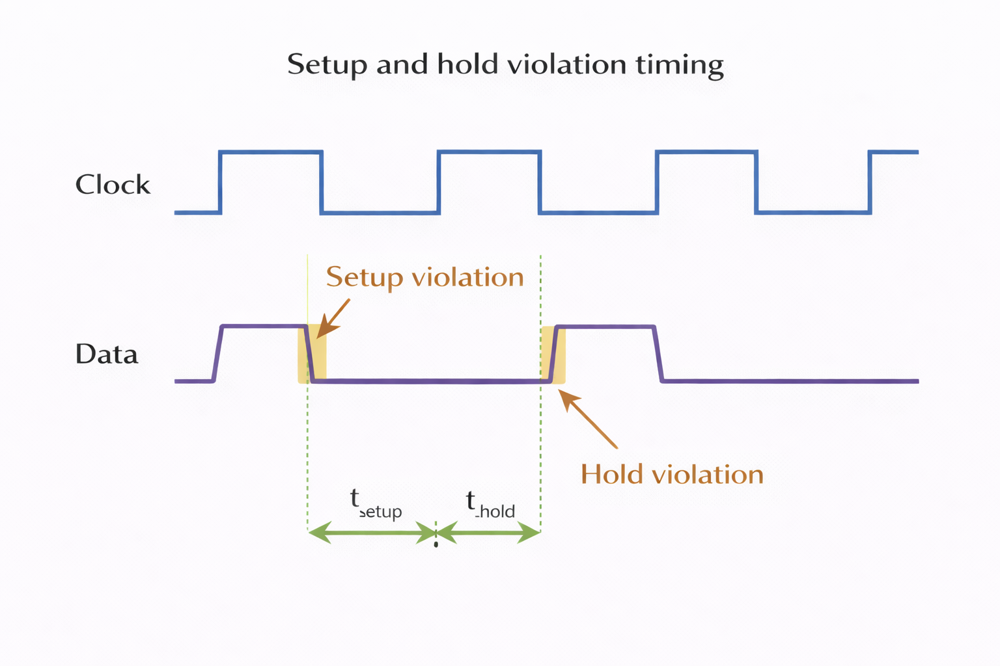
Module 7 Conclusion
Timing closure is:
The final exam of physical synthesis
Only physically-aware optimization can pass it.
CLOCK NETWORK AWARENESS IN PHYSICAL SYNTHESIS
(Clock is KING )
0️⃣ Why Clock Is Called “King”
In digital design:
- Data can be wrong
- Logic can be perfect
If clock is bad, the chip fails.
That’s why:
Clock network controls the entire chip behavior
Physical synthesis must respect the clock, even before CTS.
1️⃣ Clock Latency
🔹 What is Clock Latency?
Clock latency =
Time taken by clock signal to reach a flip-flop from clock source
🔹 Two Types (Important)
- Source latency
- Clock source → chip boundary
- Network latency
Physical synthesis mainly worries about:
Estimated network latency
🔹 Why PS Cares
If clock arrives late:
- Setup violations increase
If clock arrives early:
- Hold violations increase
So PS must estimate clock arrival.
2️⃣ Clock Skew
🔹 What is Clock Skew?
Clock skew =
Difference in clock arrival time between two flip-flops
🔹 Example
- FF1 clock arrives at 100ps
- FF2 clock arrives at 160ps
➡️ Skew = 60ps
🔹 Why Skew is Dangerous
- Positive skew → setup issues
- Negative skew → hold issues
Physical synthesis tries to:
Reduce skew impact before CTS
3️⃣ Clock Uncertainty
🔹 What is Clock Uncertainty?
Clock uncertainty represents:
- Jitter
- Variation
- Modeling inaccuracy
It is:
- Added pessimism in timing
🔹 Why PS Must Account for It
Even if timing looks clean:
- Uncertainty can break timing later
So PS optimizes with margin.
4️⃣ Clock Tree Estimation (Pre-CTS)
🔹 Important Clarification
Physical synthesis does NOT build the clock tree.
CTS does that later.
But PS:
- Estimates clock tree behavior
- Uses virtual clock trees
🔹 What PS Estimates
- Approx clock depth
- Approx buffer count
- Approx latency
This helps avoid surprises after CTS.
5️⃣ Why Physical Synthesis Cares About Clock
Because:
- Clock affects every path
- Clock defines timing window
- Clock failures = chip failure
PS tries to:
Prepare design so CTS becomes easy
6️⃣ CTS vs Physical Synthesis Responsibilities
Physical Synthesis | CTS |
Estimates clock | Builds real clock tree |
Prepares design | Balances skew |
Fixes logic timing | Fixes clock timing |
Reduces risk | Finalizes clock |
7️⃣ Pre-CTS Optimization
Before CTS:
- Fix long data paths
- Reduce clock sensitivity
- Balance logic depth
Goal:
Avoid massive timing changes after CTS
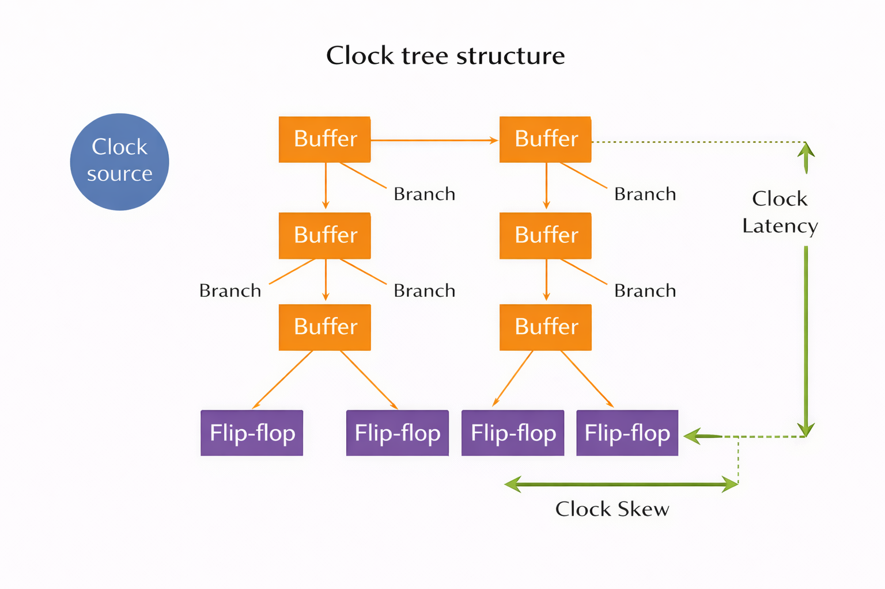
Module 8 Conclusion
Physical synthesis:
Respects clock early to avoid late-stage disasters
📘 MODULE 9
CONGESTION & ROUTABILITY AWARE PHYSICAL SYNTHESIS
(REAL SILICON PROBLEM)
0️⃣ Why Congestion Is a BIG Problem
Logical synthesis:
Physical synthesis:
- Sees real routing resources ✔️
Congestion can:
- Break timing
- Increase power
- Cause routing failure
1️⃣ What is Congestion?
Congestion =
Too many wires trying to pass through limited routing area
🔹 Simple Analogy
- Small road
- Too many vehicles
➡️ Traffic jam
Same thing happens on silicon.
2️⃣ Why Congestion Happens
Common reasons:
- High utilization
- Large macros close together
- Poor placement
- Too many connections in one area
3️⃣ Congestion Hotspots
Hotspots usually appear:
- Near macros
- Near clock roots
- In dense logic regions
PS identifies these early.
4️⃣ Impact of Congestion
🔹 On Timing
- Longer routes
- Detours
- Increased RC delay
🔹 On Power
- More buffers
- Higher switching capacitance
🔹 On Routability
- Router may fail
- Design may not tape out
5️⃣ Congestion-Aware Optimization
Physical synthesis:
- Avoids placing too many cells in one region
- Spreads logic intelligently
6️⃣ Wire Spreading
🔹 What is Wire Spreading?
- Increase spacing between wires
- Reduce coupling
- Reduce congestion
7️⃣ Cell Spreading
🔹 What is Cell Spreading?
- Reduce local density
- Increase whitespace
- Improve routability
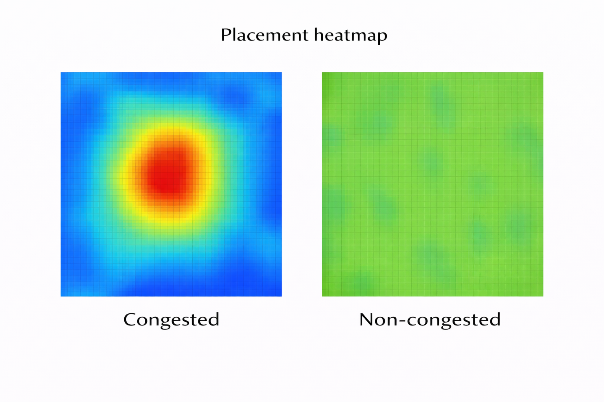
Module 9 Conclusion
Congestion-aware PS:
Prevents routing and timing failures before they happen
📘 MODULE 10
POWER AWARENESS IN PHYSICAL SYNTHESIS
(Advanced but Essential)
0️⃣ Why Power Matters
Modern chips fail because of:
Not logic correctness.
1️⃣ Dynamic Power
🔹 What is Dynamic Power?
Power consumed when:
Formula (conceptual):
Dynamic power ∝ switching × capacitance × voltage²
🔹 PS Impact
- Longer wires → more capacitance
- Bigger cells → more power
2️⃣ Leakage Power
🔹 What is Leakage Power?
Power consumed:
- Even when circuit is idle
Caused by:
- Transistor leakage
- Advanced nodes
3️⃣ Switching Activity
🔹 What is Switching Activity?
How often signals toggle.
PS may use:
- Estimated activity
- Default assumptions
4️⃣ Power vs Timing Trade-offs
Critical paths:
Non-critical paths:
Physical synthesis balances:
Timing first, then power recovery
5️⃣ Early Power Estimation
Before P&R:
- PS estimates power roughly
- Identifies power hotspots
This avoids late surprises.
6️⃣ Low-Power Optimizations (Intro)
At PS stage:
- Avoid unnecessary buffers
- Prefer low-leakage cells
- Reduce switching on non-critical paths
Advanced techniques (later stages):
- Clock gating
- Power gating (handled later)
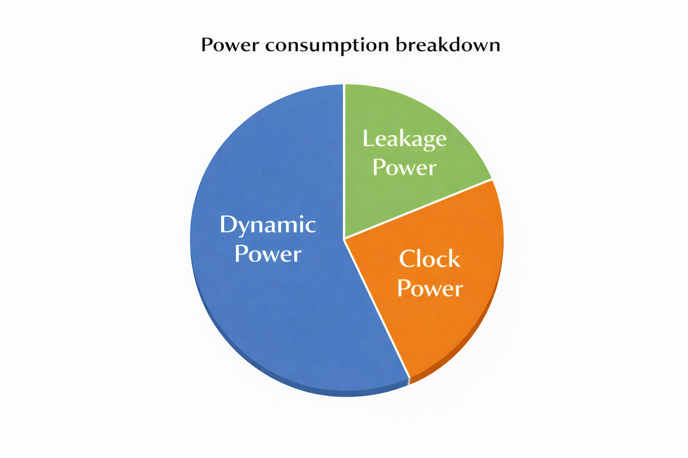
Module 10 Conclusion
Power-aware physical synthesis:
Delivers fast AND efficient silicon
📘 MODULE 11
PHYSICAL SYNTHESIS vs PLACE & ROUTE
(Students confuse this a LOT – so we go very deep)
0️⃣ Why This Confusion Exists
From outside, both PS and P&R:
- Touch placement
- Talk about timing
- Mention buffers, sizing, congestion
So students think:
“PS and P&R are same”
They are NOT
1️⃣ What Physical Synthesis Does (CLEARLY)
Physical Synthesis is:
Logic optimization with physical awareness
Key points:
- It does NOT do final placement
- It does NOT do routing
- It DOES change logic
🔹 PS Focus Areas
Physical synthesis:
- Sees estimated placement
- Sees estimated wire delay
- Fixes timing using logic changes
Examples:
- Gate sizing
- Buffer insertion
- Logic restructuring
- Path optimization
PS changes the netlist
2️⃣ What Place & Route Does (CLEARLY)
Place & Route is:
Physical realization of the design
Key points:
- It places cells legally
- It builds clock tree
- It routes wires
- It fixes remaining timing physically
🔹 P&R Focus Areas
P&R works on:
- Exact cell locations
- Real routing layers
- Exact parasitics
- Physical DRC rules
P&R changes geometry, not logic (mostly)
3️⃣ Where Physical Synthesis Stops
Physical synthesis stops at:
- Optimized gate-level netlist
- Physical-aware constraints
- Timing mostly clean
It hands off to P&R:
- A better design
- A physically realistic design
4️⃣ Why PS Improves P&R Results
Without PS:
- P&R struggles
- Too many violations
- Too many ECO loops
With PS:
- Shorter critical paths
- Better cell distribution
- Fewer buffers later
- Faster convergence
PS is like preparing soil before planting
5️⃣ Handoff Between PS and P&R
🔹 What PS Gives to P&R
- Optimized netlist
- Updated SDC
- Physical guidance
- Cleaner timing
🔹 What P&R Starts With
- PS netlist
- Floorplan
- CTS planning
- Routing optimization
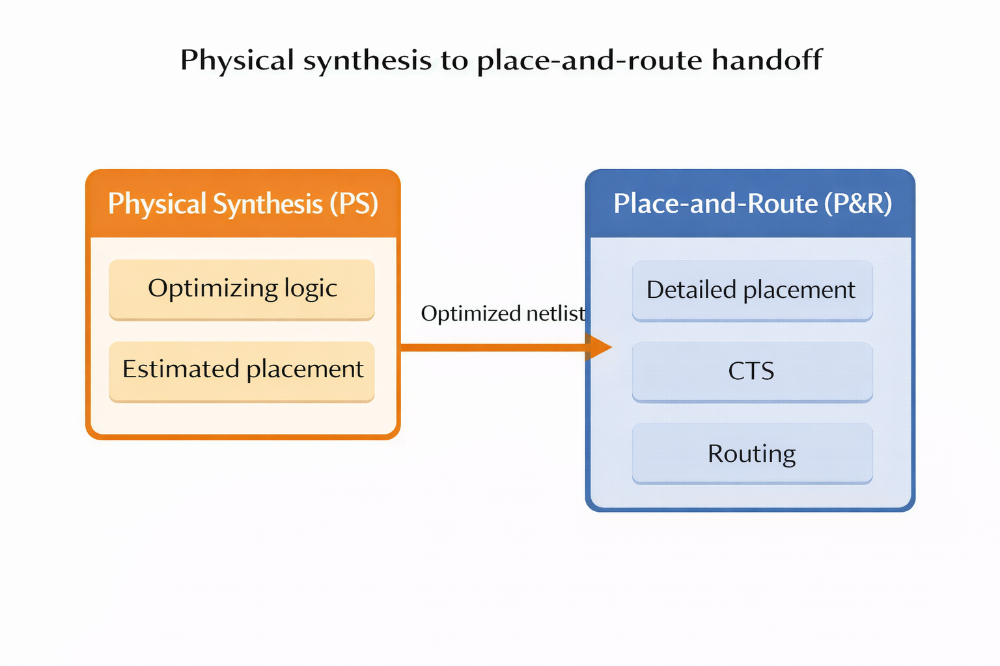
Module 11 Conclusion
One-line industry truth:
Physical Synthesis makes P&R easy.
P&R makes silicon real.
📘 MODULE 12
OUTPUTS OF PHYSICAL SYNTHESIS
(What We Deliver)
0️⃣ Why Outputs Matter
In industry:
- No output = no progress
- Every stage delivers artifacts
PS outputs are contract between PS and P&R teams.
1️⃣ Optimized Gate-Level Netlist
🔹 What This Is
- Same design functionality
- Improved timing
- Improved power
- Improved routability
🔹 What Changed Compared to LS Netlist
- Gate sizes modified
- Buffers added/removed
- Logic reshaped
- Critical paths optimized
This is the main deliverable
2️⃣ Updated Constraints (SDC)
PS updates:
- Clock latency assumptions
- Uncertainty
- Path constraints
Why?
- Reflect physical reality
- Avoid optimistic timing
3️⃣ Timing Reports
PS generates:
- Setup timing reports
- Hold timing reports
- WNS, TNS
Used by:
- P&R engineers
- Project leads
4️⃣ Power Reports
Includes:
- Dynamic power estimate
- Leakage power estimate
- Clock power estimate
Purpose:
- Early power sign-off direction
5️⃣ Area Reports
Shows:
- Cell area usage
- Buffer overhead
- Optimization impact
Helps:
- Control die size
- Control cost
6️⃣ Physical Guidance Files
These may include:
- Placement hints
- Optimization regions
- Congestion-aware suggestions
Used internally by tools or passed to P&R.
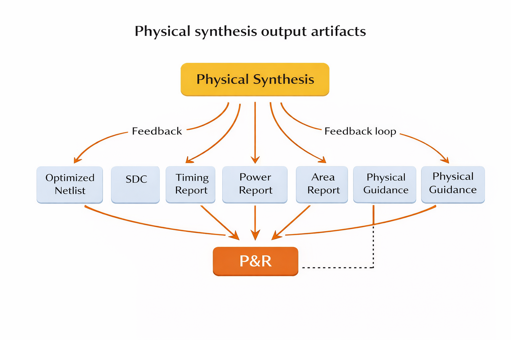
Module 12 Conclusion
Physical synthesis outputs:
A physically optimized design ready for real implementation
MODULE 13
INDUSTRIAL PHYSICAL SYNTHESIS FLOW
(REAL COMPANY FLOW)
0️⃣ This Is NOT Linear – This Is Iterative
Books show:
RTL → LS → PS → P&R
Industry reality:
Loops, feedback, ECOs
1️⃣ End-to-End Industrial Flow
🔹 Step-by-Step
- RTL Design
- Logical Synthesis
- Initial Floorplan
- Physical Synthesis
- Place & Route
- Feedback
- ECO
- Repeat until signoff
2️⃣ Script-Driven Flow
In companies:
- No GUI clicking
- Everything is scripted
Why?
- Reproducibility
- Automation
- Regression runs
Example:
- Overnight PS runs
- Multiple corners
- Multiple blocks
3️⃣ Iterations with P&R Team
Typical feedback:
- “This path still critical”
- “Congestion here”
- “Power too high”
PS engineer:
- Updates constraints
- Re-optimizes logic
- Sends new netlist
4️⃣ ECO Loops (Engineering Change Order)
Late-stage changes:
- Timing fixes
- Functional fixes
- Power fixes
PS plays key role in:
- Fast ECO turnaround
- Minimal disturbance
5️⃣ Signoff Mindset
Physical synthesis engineer must think:
- Will this survive CTS?
- Will this route?
- Will this close timing?
Goal:
Minimize surprises at signoff
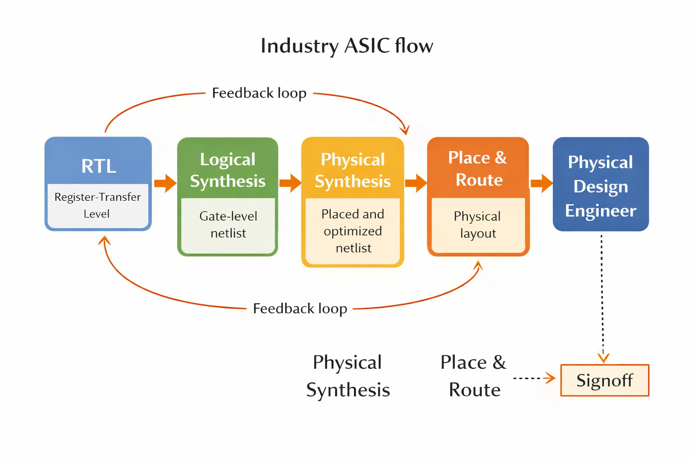
Module 13 Conclusion
Physical synthesis in industry is:
An optimization bridge between logic and silicon reality
PHYSICAL SYNTHESIS COMPLETE (ZERO → HERO)
You now fully understand:
- What PS is
- Why it exists
- How it helps P&R
- What it delivers
- How industry actually works
PHYSICAL SYNTHESIS ENGINEER SKILLS
(Career-Focused – VERY IMPORTANT)
This module answers the student’s hidden question:
“What do companies actually expect from a Physical Synthesis engineer?”
1️⃣ Required Tool Knowledge (What You MUST Know)
A Physical Synthesis engineer is not judged by theory alone.
🔹 Core Tools (Industry Reality)
You should be comfortable with:
- Synopsys Design Compiler – Topographical
- Fusion Compiler (increasingly common)
- Cadence Genus (physical-aware synthesis)
Not just commands — but:
- Why a command is used
- What happens internally
- How output affects next stage
Tools are just instruments.
Understanding is what makes you valuable.
2️⃣ Timing Debugging Mindset (MOST IMPORTANT SKILL)
This is where average engineers fail and good engineers shine.
🔹 You Must Think Like This:
- Why is this path critical?
- Is delay from logic or wire?
- Can restructuring help?
- Will CTS make this worse?
You should be able to:
- Read timing reports calmly
- Trace a path end-to-end
- Decide what NOT to fix
Physical synthesis is decision-making, not command execution.
3️⃣ Communication with P&R Team
In industry:
Physical synthesis NEVER works alone
You constantly talk to:
- P&R engineers
- Floorplan owners
- Clock team
- Power team
🔹 Good PS Engineer:
- Explains issues clearly
- Understands P&R pain points
- Fixes root causes, not symptoms
Bad PS engineer:
- Blames P&R
- Pushes unrealistic netlists
- Ignores congestion
4️⃣ Common Mistakes by Freshers
Let’s be honest.
Freshers often:
- Over-optimize timing
- Ignore power & congestion
- Trust tool blindly
- Fix reports without understanding
Industry expects:
- Balanced optimization
- Silicon thinking
- Patience
Don’t fight the tool — guide it
5️⃣ Interview Expectations (REAL)
Interviewers look for:
- Concept clarity (not command memorization)
- Debug thinking
- Understanding of PS vs P&R
- Awareness of real chip issues
They may ask:
- “Why PS before P&R?”
- “What happens if you skip PS?”
- “How does congestion affect timing?”
Module 14 Conclusion
A Physical Synthesis engineer is:
Half logic expert + half physical thinker + full system problem solver
MODULE 15
COMMON MYTHS & MISTAKES
(Student Confidence Builder)
This module removes fear and confusion.
Myth 1: “Physical Synthesis replaces P&R”
FALSE
Truth:
- PS supports P&R
- PS prepares design
- P&R implements design
Think:
- PS = planning
- P&R = construction
Myth 2: “Only timing matters”
WRONG
In real chips:
- Timing
- Power
- Area
- Congestion
- Routability
All matter together.
Fixing timing blindly can:
- Increase power
- Break routing
- Create ECO nightmares
Myth 3: “RTL coding doesn’t matter”
VERY DANGEROUS MYTH
Bad RTL causes:
- Long paths
- Bad hierarchy
- Congestion
- PS struggles
Good RTL:
- Makes PS easier
- Makes P&R faster
- Saves months of effort
Backend starts at RTL quality
Myth 4: “More optimization is always better”
Truth:
- Over-optimization = instability
- PS must know when to stop
Module 15 Conclusion
Physical synthesis success comes from:
Understanding trade-offs, not chasing numbers
MODULE 16
ZERO → HERO SUMMARY
(Wrap-Up for Students)
This is the confidence checkpoint.
1️⃣ What the Student Knows Now
After this course, the student understands:
- Why physical synthesis exists
- Difference between LS, PS, and P&R
- How timing is affected by wires
- How optimization really works
- How industry flows actually run
This is not beginner knowledge anymore.
2️⃣ How Physical Synthesis Helps Silicon Success
Without PS:
- Poor timing closure
- Excess ECOs
- High power
- Congestion nightmares
With PS:
- Predictable P&R
- Faster convergence
- Better silicon quality
PS reduces risk in chip design.
3️⃣ Next Step: Place & Route
Now the student is READY for:
- Placement
- CTS
- Routing
- Signoff timing
- Physical verification
Physical synthesis is the bridge.
Now you walk into real physical design.
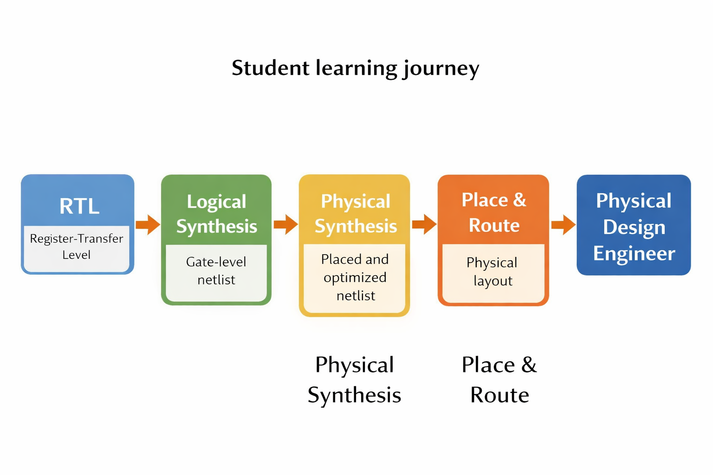